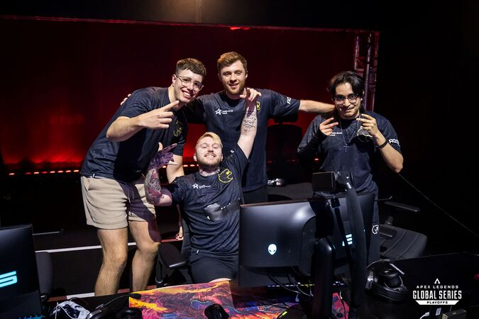
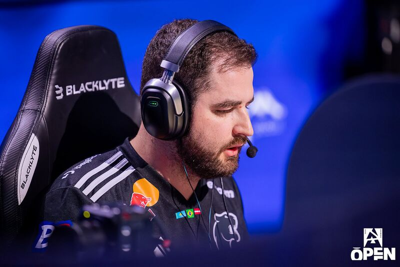
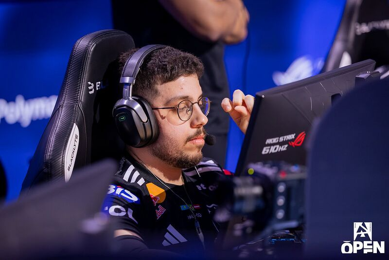
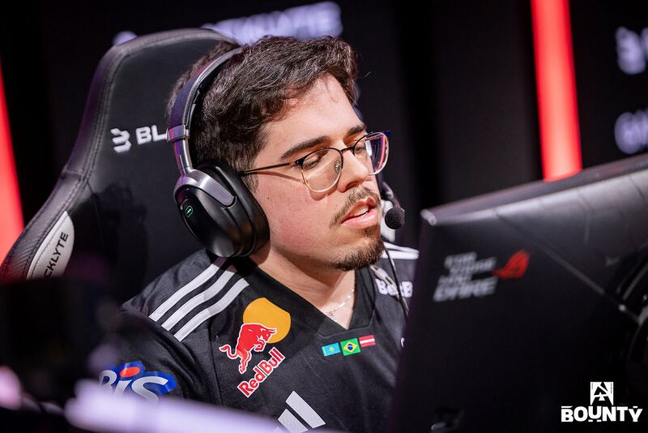
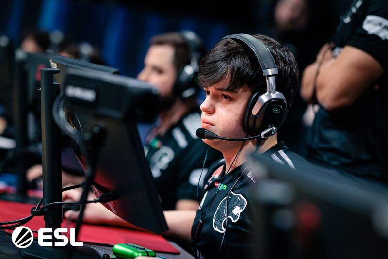

Fundada em 2017 — Brasil
Somos a FURIA
De Uberlândia para o mundo. A história da organização brasileira que redefiniu o esporte eletrônico nacional e colocou o Brasil no mapa global.
Conheça a história
Fundada em 2017 — Brasil
De Uberlândia para o mundo. A história da organização brasileira que redefiniu o esporte eletrônico nacional e colocou o Brasil no mapa global.
Conheça a história/i.s3.glbimg.com/v1/AUTH_08fbf48bc0524877943fe86e43087e7a/internal_photos/bs/2020/j/s/PAqU0nTaK7kwy9bPQomA/85246118-592233187991935-937242669501906944-o.jpg)
A FURIA Esports foi fundada em 2017 por Jaime Pádua, André Akkari e Cris Guedes em Uberlândia, Minas Gerais. O nome "FURIA" não é apenas uma marca — é uma filosofia: agressividade, intensidade e coragem para enfrentar qualquer adversário.
Em menos de dois anos após sua fundação, a organização surpreendeu o mundo ao levar seu elenco de CS:GO ao Top 2 do ranking mundial da HLTV, superando potências europeias e norte-americanas com um estilo único — rápido, caótico e brilhante.
Hoje a FURIA compete em múltiplas modalidades, tem operações nos Estados Unidos e no Brasil, e é reconhecida como uma das organizações de esports mais inovadoras do planeta.

Elenco atual (junho 2026): FalleN (IGL), KSCERATO, yuurih, YEKINDAR e molodoy. Top 6 mundial, disputando o IEM Cologne Major 2026.
Elenco 2026: artzin, eeiu, koalanoob, nerve (IGL) e alym. Primeiro lineup internacional da história da FURIA no VAL.
:strip_icc()/i.s3.glbimg.com/v1/AUTH_bc8228b6673f488aa253bbcb03c80ec5/internal_photos/bs/2022/3/R/9hLrWZSA6rAXAkBp0J9w/furia-rlcs-8-.jpg)
Elenco 2026: swiftt, Lostt e yanxnz. Líderes do ranking RLCS SAM e participantes do Paris Major 2026.

Elenco 2026: Guigo (Top), JoJo (Jungle), Tutsz (Mid), Tatu (ADC) e Ayu (Support). Top 18 mundial, com passagem pelo MSI 2025.

Pioneira no Apex Legends no Brasil desde 2019, a FURIA mantém presença ativa nas Apex Legends Global Series, representando a América do Sul nos torneios internacionais.
Com enorme base de fãs no Brasil, a FURIA disputa a LBFF e torneios internacionais da Garena, sendo uma das organizações mais populares do cenário de Free Fire no país, A equipe deixou o cenário da competição em 2023.
| Torneio | Modalidade | Ano | Resultado |
|---|---|---|---|
| FISSURE Playground 2 | CS2 | 2025 | 🥇 Campeão |
| Thunderpick World Championship | CS2 | 2025 | 🥇 Campeão |
| IEM Chengdu | CS2 | 2025 | 🥇 Campeão |
| BLAST Rivals Season 2 | CS2 | 2025 | 🥇 Campeão |
| IEM Krakow | CS2 | 2026 | 🥈 Vice-campeão |
| ESL One Road to Rio | CS:GO | 2020 | 🥇 Campeão |
| DreamHack Open Summer | CS:GO | 2020 | 🥇 Campeão |
| ESL Pro League Season 12 | CS:GO | 2020 | 🥈 Vice-campeão |
| IEM Rio Major | CS:GO | 2022 | 🏅 Semifinal |
| VCT Americas Kickoff | VALORANT | 2026 | 🥇 Campeão |
| Masters Santiago | VALORANT | 2026 | 🏅 Top 8 |
| RLCS World Championship | Rocket League | 2024 | 🏅 Top 3 Mundial |
| Mid-Season Invitational | League of Legends | 2025 | 🏅 Top 10 |
| Apex Legends Global Series SAM | Apex Legends | 2022 | 🏅 Top 3 Regional |

Gabriel "FalleN" Toledo, lenda viva do CS mundial. Capitão da FURIA desde 2023, conduz o time com experiência de Major e uma carreira que redefiniu o CS brasileiro.

Kaike "KSCERATO" Cerato, um dos melhores riflers da história do Brasil. Consistência e clutches épicos são sua assinatura desde 2018 na FURIA.

Yuri "yuurih" Santos, membro histórico da FURIA desde 2017. Um dos riflers mais talentosos do cenário mundial, assinou contrato até 2027 pela organização.

Mareks "YEKINDAR" Gaļinskis, letão e um dos entry fraggers mais agressivos do mundo. Chegou à FURIA em 2025 e trouxe consistência internacional ao elenco.

Danil "molodoy" Golubenko, jovem sniper cazaque com reflexos excepcionais. Peça fundamental no sucesso da FURIA nos títulos de 2025 e na campanha do IEM Cologne Major 2026.